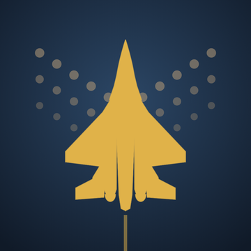

Chie Collective
Stone Bird Support
Playing
How do I fly and shoot?
Drag anywhere on the screen to fly; the jet follows your finger. Your guns fire while your finger is down. Lift your finger to stop firing.
How do I use a mega bomb?
Tap the stone-bird icon at the bottom left. It clears enemy fire and hits everything on screen. You can buy more in Nyeleni's hangar between contracts.
How do heavy weapons work?
You can carry every heavy weapon you've bought, but only one fires at a time. Tap the button at the bottom right to switch, even with your other thumb while you keep flying. The ring around it shows reload, or heat for the Sun Lance. In the hangar, choose which one is armed when you take off.
Why do my missiles or flak turret sometimes stop firing?
Heat-seeking missiles, the seeker swarm and the flak turret only hit aircraft. Over stretches with only boats and ground guns, they hold their fire. The Ember Mortar is the opposite: it only hits targets on the ground. Mix your loadout for both.
I keep getting shot down. Any tips?
- Buy a phase shield in the hangar: it takes hits before your hull does.
- Repair your hull between contracts.
- Listen for the radar warning: it means attackers are coming from behind.
- Save a mega bomb for boss fights.
Progress and settings
Where is my progress saved?
On your iPhone. Your progress saves automatically after every contract. It isn't stored online, so deleting the game deletes your progress. Your device's iCloud or computer backup includes it.
How do I start over?
Choose New Game on the title screen. This replaces your current campaign.
How do I change the music, sound or radio volume?
Open Settings from the title screen, the hangar or the pause menu. Music, sound effects and radio voices each have their own slider. The game also follows your iPhone's silent switch.
Beta testing
How do I send feedback from the beta?
In the TestFlight beta, take a screenshot while playing and tap Share Beta Feedback, or open the TestFlight app, select Stone Bird and tap Send Beta Feedback. Your notes and screenshots come straight to us.
Will my beta progress carry over?
Beta saves usually carry over between beta builds. Some updates may change the game's balance enough that starting a New Game gives a better experience; the release notes will say when.
Privacy
Does the game collect my data?
No. There are no accounts, ads, analytics or tracking, and the game never goes online. See the privacy policy.